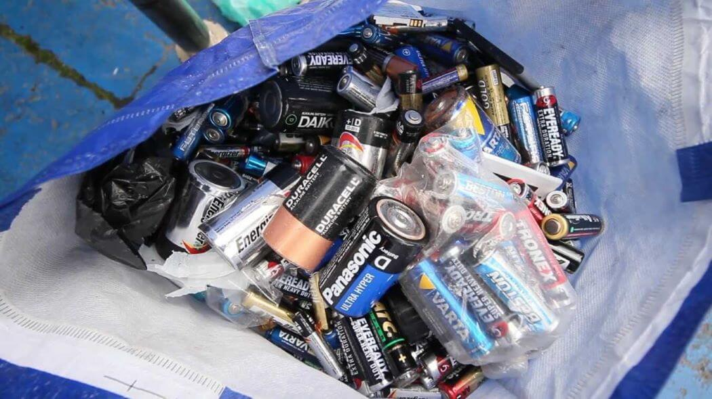
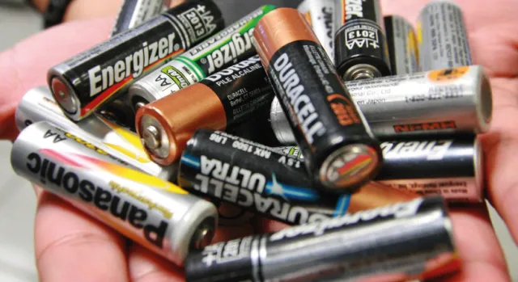
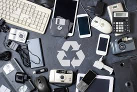
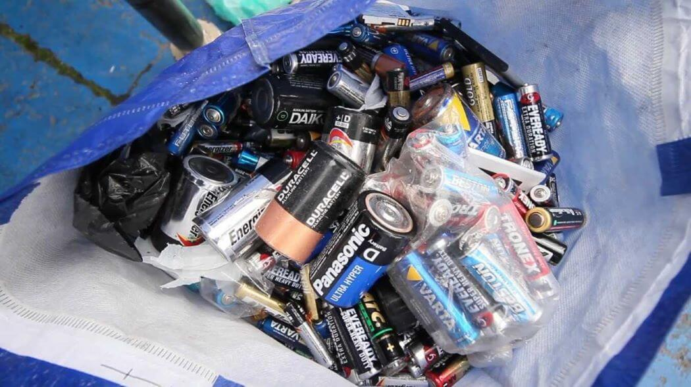
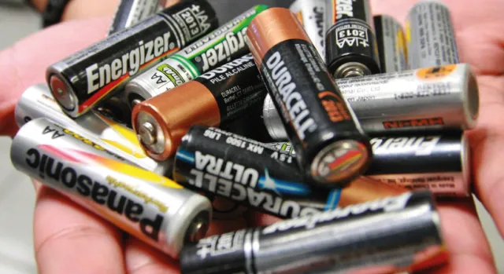
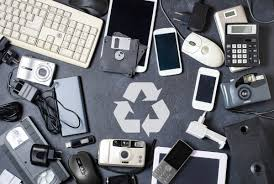

¿Como reciclar desde mi casa?

La gestión de pilas y baterías usadas resulta un problema ambiental complicado. Esto es debido a sus distintos componentes y el nivel de toxicidad de cada uno de ellos.
Pero, ¿cómo nos podemos deshacer adecuadamente de estos residuos sin poner en riesgo nuestra salud ni generar impactos en el medio ambiente?
Información básica acerca del desecho de baterías
Tipos de baterías
Las baterías de un solo uso vienen en una variedad de tamaños, como celdas AA, AAA, 9V, C o D. Estos son el tipo más común de baterías que se pueden encontrar en controles remotos, juguetes para niños y dispositivos inalámbricos.
Si bien estas baterías son lo suficientemente seguras como para desecharlas, es mejor no hacerlo. Las baterías de un solo uso que se tiran a la basura se llevan a un vertedero y solo contribuyen a la generación de desechos sólidos contaminantes.
Muchos aparatos electrónicos usan baterías recargables como los teléfonos celulares, cámaras digitales y computadoras portátiles. Hay diferentes tipos de baterías recargables que incluyen:
Estas baterías nunca deben tirarse a la basura porque contienen materiales diferentes al de las baterías de un solo uso que pueden ser peligrosos para el medio ambiente.
Es importante saber que las baterías pueden tener suficiente energía para provocar incendios incluso cuando se usan y cuando parecen estar descargadas. Por seguridad, recuerde que no todas las baterías son extraíbles o reparables por el usuario; preste atención a las marcas de la batería y del producto con respecto a la seguridad y el uso de todos los tipos de baterías.
Cómo reciclar baterías recargables y de un solo uso
Desafortunadamente, no se pueden desechar las pilas o baterías recargables o de un solo uso en su contenedor de reciclaje para su recolección en casa. Deben llevarse a una instalación de reciclaje especial para que puedan ser gestionadas y clasificadas.
Una vez que hayas encontrado una instalación de reciclaje especial que acepte baterías, debes prepararlas para el reciclaje.
Coloca las baterías en una bolsa o péguelas con cinta adhesiva: para evitar un riesgo de incendio, pegue cada extremo de la batería con cinta transparente no conductora para evitar descargas residuales. Si no tiene cinta, puede colocar cada batería en su propia bolsa de plástico.
Deposita las baterías en un recipiente no conductor: Coloca las baterías envueltas en un contenedor especial. No las coloques en una caja de metal porque podrían producir chispas y provocar un incendio.
Retira las baterías viejas de sus dispositivos electrónicos.
Al igual que con las baterías de un solo uso, es bueno encintarlas o embolsarlas de manera segura para reciclarlas.
 




